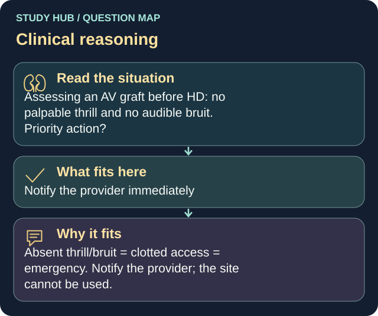

Assessing an AV graft before HD: no palpable thrill and no audible bruit. Priority action?
Answer
Notify the provider immediately
Reasoning
Absent thrill/bruit = clotted access = emergency.
Clinical detail
Notify the provider; the site cannot be used.
Why the other answers do not fit
- Reassess in 30 minutes
- Apply warm compress and hand exercises
- Proceed with dialysis using the graft
Shared reasoning for choices without a separate note: Absent thrill/bruit = clotted access = emergency. Notify the provider; the site cannot be used.
